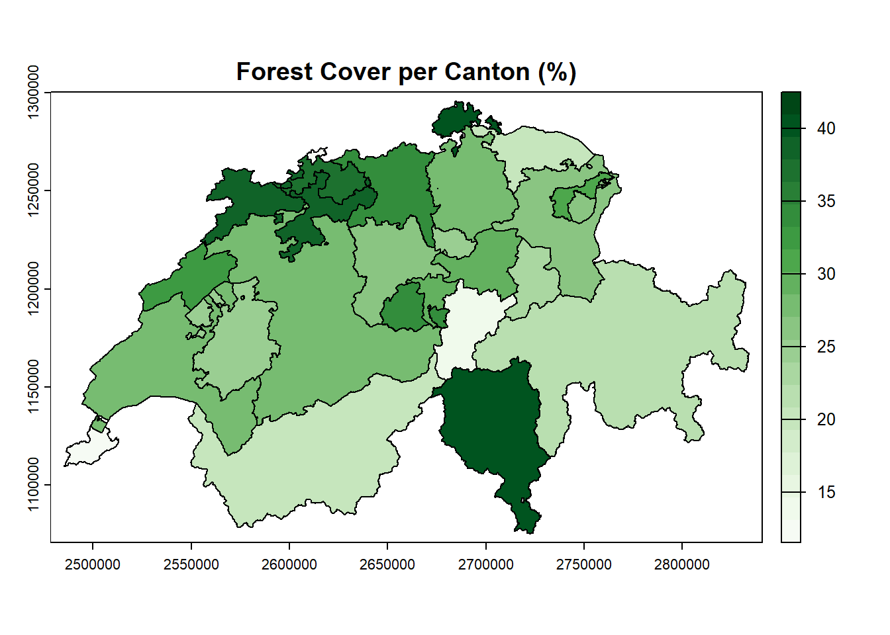

Code
# Load necessary libraries
library(pacman)
p_load(terra,
tictoc,
dplyr)
tic.clearlog()Spatiotemporal Datascience
In this document, I solve the tasks for raster deepdive of the course Spatiotemporal Datascience.
# Load necessary libraries
library(pacman)
p_load(terra,
tictoc,
dplyr)
tic.clearlog()This script calculates the percentage of forest cover per Swiss canton by transitioning from a purely vector-based workflow to a raster-based spatial analysis using the terra package.
In this step, the vector data is loaded into the computer’s RAM.
terra::vect() reads the specific layers from the GeoPackage files. Unlike standard data frames, a SpatVector object in terra understands geometry (coordinates, bounding boxes, and projections).
The Filter (forest[…]) applies a logical subset directly to the vector object. It is telling R to look at the objektart column and drop every polygon that isn’t labeled “Wald”. By doing this early, a massive amounts of memory is saved before the heavy rasterization step begins.
# 1. Load Datasets
path_tlm3d_boden <- "../data/SWISSTLM3D_2025.gpkg"
path_cantons <- "../data/swissBOUNDARIES3D_1_5_LV95_LN02.gpkg"
tic("Task 1: terra approach")
# Load and subset cantons vector
cantons <- terra::vect(path_cantons, layer = "tlm_kantonsgebiet")
# Load and filter forest vector
forest <- terra::vect(path_tlm3d_boden, layer = "tlm_bb_bodenbedeckung")
forest <- forest[forest$objektart == "Wald", "objektart"]In this step, the vector datasets are getting rasterized.
The Blank Canvas (rast(…)) uses the cantons bounding box to generate an empty grid (template_raster). By setting resolution = 100, every pixel will represent a 100m x 100m square (10,000 m²). This can be changed to any specific resolution with effects on performance and accuracy.
Then the rasterize(cantons, … field = “kantonsnummer”) function takes the empty grid and “burns” the canton ID numbers into it. If a pixel falls inside Zurich (Canton 1), it gets the value 1.
By setting field = 100 for forests and background = 0 for non-forests the calculation of the percentage later on is getting simpler.
# 2. Create a Raster Template and Rasterize
tic("Rasterize forest polygons")
# Create 100m raster template based on cantons extent
template_raster <- rast(cantons, extent = ext(cantons), resolution = 100, crs = crs(cantons))
# Rasterize canton dataset
canton_raster <- rasterize(cantons, template_raster, field = "kantonsnummer")
# Burn forest polygons into raster (Forest = 100, Background = 0)
# By setting field = 100, the mean() function later will perfectly output the percentage
forest_raster <- rasterize(forest, template_raster, field = 100, background = 0)
toc(log = TRUE)Rasterize forest polygons: 9.89 sec elapsedThis is the core analytical engine of the script.
The zonal function overlays the two grids perfectly. It looks at all the pixels in canton_raster that equal 1 (Zurich). It then looks at those exact same pixel locations in the forest_raster and calculates their average (mean).
If Zurich has exactly half forest (100) and half empty land (0), the mathematical mean is 50. This is a very simple but efficient method to calculated the percentage directly in the spatial engine without writing a single formula.
The zonal() function outputs a raw matrix of IDs and numbers. I convert it to a standard data frame (as_tibble), rename the output column for clarity, and perform an inner_join to attach the human-readable canton names to the raw kantonsnummer IDs. Finally, arrange(desc()) sorts the table so the most heavily forested cantons are at the top.
# 3. Calculate Area and Percentage
tic("Calculate final percentages")
# Define Canton number-name keys
kanton_number_keys <- as.data.frame(cantons) %>%
select(name, kantonsnummer)
# Compute the forest cover using zonal operations
forest_cover <- zonal(forest_raster, canton_raster, fun = "mean") %>%
as_tibble() %>%
rename(forest_percentage = layer) %>%
inner_join(kanton_number_keys, by = "kantonsnummer") %>%
arrange(desc(forest_percentage))
print(forest_cover)# A tibble: 26 × 3
kantonsnummer forest_percentage name
<dbl> <dbl> <chr>
1 21 42.5 Ticino
2 14 42.0 Schaffhausen
3 11 40.5 Solothurn
4 26 40.1 Jura
5 13 39.1 Basel-Landschaft
6 6 35.4 Obwalden
7 19 34.9 Aargau
8 24 34.2 Neuchâtel
9 15 31.6 Appenzell Ausserrhoden
10 7 30.3 Nidwalden
# ℹ 16 more rowstoc(log = TRUE)Calculate final percentages: 0.3 sec elapsedtoc(log = TRUE) # Ends the "Task 1" timerTask 1: terra approach: 30.6 sec elapsedAt this point, forest_cover is just a spreadsheet. It has no map data attached to it.
The function, merge(cantons, forest_cover, by = “kantonsnummer”) is a classic relational database operation. It takes the spatial cantons polygons and glue the new forest_percentage data frame onto its attribute table. Now, the geometries “know” their forest percentage.
In a last step terra draws the geometries. By passing the “forest_percentage” column name, terra automatically creates a choropleth map. The col argument uses a built-in R color palette (hcl.colors) to shade the cantons dynamically—darker green for higher percentages, lighter green for lower.
# 4. Plot Results
# Merge the calculated percentages Back to the spatial vector
cantons <- merge(cantons, forest_cover, by = "kantonsnummer")
# Now plot the spatial vector using the new column
plot(cantons, "forest_percentage",
col = hcl.colors(20, "Greens", rev = TRUE),
main = "Forest Cover per Canton (%)",
type = "continuous")
This task implements a hybrid processing pipeline, leveraging the strengths of two distinct computing paradigms: the low-level binary speed of the GDAL Command Line Interface (CLI) and the high-level analytical capabilities of R’s terra package.
Due to the cross-platform limitations of running Quarto on a Windows operating system, natively rendering bash chunks often results in environment and pathing errors (as Quarto spins up an isolated emulator that does not inherit local Conda activations). To prevent rendering failures, the following bash code chunks are set to #| eval: false so they display cleanly in the final report. However, all commands were successfully executed locally within a fully provisioned PowerShell Conda environment, and the resulting execution times and outputs were meticulously recorded for the performance analysis below.
Before touching any data, an isolated Conda environment specifically for this task is built. GDAL is installed from the conda-forge channel, to ensure pulling the most modern, highly optimized, and pre-compiled C++ binaries available for the operating system.
# Create the environment
conda create -n gdal_env
# Activate the environment
conda activate gdal_env
# Install GDAL
conda install -c conda-forge gdal# starts the measurement
tictoc::tic(msg = "Task 2: gdal approach")
tictoc::tic(msg = "Transform the data")In this Step the vector geometries are getting rasterized.
For the cantons, -a kantonsnummer is used to burn the unique ID into the pixels.
For the forests data, -init 0 fills the entire Swiss bounding box with valid zeros (empty land), while –burn 100 marks the forests. Nodata is set to 255 so that actual missing data is ignored, but the zeros are kept for the math.
# Convert Cantons to raster
gdal vector rasterize -l tlm_kantonsgebiet --resolution 100,100 --input ../data/swissBOUNDARIES3D_1_5_LV95_LN02.gpkg -a kantonsnummer --overwrite --output ../data/cantons.tif
# Convert Forest areas to raster
gdal vector rasterize --where "objektart='Wald'" -l tlm_bb_bodenbedeckung --resolution 100,100 --input ../data/SWISSTLM3D_2025.gpkg --overwrite --nodata 255 --init 0 --burn 100 --output ../data/forest.tiftictoc::toc(log = TRUE)Transform the data: 0.11 sec elapsedtictoc::tic(msg = "Assign forest areas to cantons")In this step GDAL streams the two created grids simultaneously. It groups the pixels based on the zones (the Canton IDs) and calculates the –stat=mean of the 0s and 100s. The resulting mathematical mean is exactly equal to the forest percentage.
gdal raster zonal-stats --input ../data/forest.tif --zones ../data/cantons.tif --stat=mean --overwrite --output ../data/forest_percent.csvtictoc::toc(log = TRUE)Assign forest areas to cantons: 0.05 sec elapsedtictoc::tic(msg = "Calculate the percantage")In this step, the SQLite dialect is used to perform a cross-file relational join.
GDAL opens the newly created CSV file (z) and dynamically join it to the raw GeoPackage database (k) living on your hard drive.
CAST(z.value AS INTEGER) is used to ensure the CSV text numbers match the database integers perfectly.
Then I extract the Canton ID, the Canton Name, and the calculated Percentage (mean), sort them descending, and output a final, clean CSV.
gdal vector sql --input ../data/forest_percent.csv --dialect sqlite --sql "SELECT z.value AS kantonsnummer, k.name, z.mean FROM forest_percent z JOIN '../data/swissBOUNDARIES3D_1_5_LV95_LN02.gpkg'.tlm_kantonsgebiet k ON CAST(z.value AS INTEGER) = k.kantonsnummer ORDER BY z.mean DESC" --format CSV --overwrite --output final_analysis_results.csv
cat final_analysis_results.csv# ends the measurement
tictoc::toc(log = TRUE)Calculate the percantage: 0.04 sec elapsedtictoc::toc(log = TRUE)Task 2: gdal approach: 0.2 sec elapsed# Finally (to get a full log:)
tictoc::tic.log()[[1]]
[1] "Rasterize forest polygons: 9.89 sec elapsed"
[[2]]
[1] "Calculate final percentages: 0.3 sec elapsed"
[[3]]
[1] "Task 1: terra approach: 30.6 sec elapsed"
[[4]]
[1] "Transform the data: 0.11 sec elapsed"
[[5]]
[1] "Assign forest areas to cantons: 0.05 sec elapsed"
[[6]]
[1] "Calculate the percantage: 0.04 sec elapsed"
[[7]]
[1] "Task 2: gdal approach: 0.2 sec elapsed"| Approach | Architecture | Performance Characteristics |
|---|---|---|
| sf | In-Memory Vector | Slowest; performs complex vertex-to-vertex topology calculations. |
| duckdb | Out-of-Core Vector | Fast; optimizes spatial queries using indices without full RAM usage. |
| terra | In-Memory Raster | Very Fast; simplifies geometry to binary pixel grids for math. |
| GDAL CLI | System Binary | Optimal; utilizes optimized C++ streams to process data directly on disk. |
The recorded execution times reveal a significant performance gap between vector-based and raster-based workflows, though this speedup requires a deliberate compromise between computational efficiency and spatial accuracy. While the sf approach struggles with the computational overhead of evaluating complex, vertex-to-vertex polygon topologies, shifting the task to a raster grid results in an exponential speedup. However, this rasterization inherently introduces discretization error, as precise vector boundaries are generalized into discrete 100m x 100m pixels, losing fine-edge topology.
Furthermore, it is critical to note that the efficiency of the raster approach is strictly governed by the chosen spatial resolution. If this analysis required high-precision boundaries—such as a 1m or 5m resolution, the resulting pixel grid would grow quadratically in size. Processing such massive mathematical matrices would require significantly more memory and time, potentially exceeding the computational cost of the original vector approach. Therefore, for a national-scale cantonal aggregation, the 100m resolution represents the optimal methodological choice, intentionally sacrificing localized boundary precision to achieve macro-level computational scalability.
The GDAL CLI emerges as the most efficient method (~0.3s) because it operates closest to the system’s hardware. By “streaming” the geometries directly from the source GeoPackage to compressed TIFFs on the disk, it entirely bypasses the memory-management constraints of the R environment. Furthermore, executing the zonal statistics (zonal-stats) and relational joins (vector sql) natively within GDAL demonstrates that a pure, end-to-end command-line pipeline represents the absolute optimal approach for processing large-scale national datasets without RAM bottlenecks.
This assignment fundamentally changed how I approach large-scale spatial processing. The primary takeaway was realizing the sheer computational dominance of a low-level CLI pipeline over high-level R packages. By shifting from in-memory vector calculations to a pure C++ raster-streaming architecture, using gdal vector rasterize, zonal-stats, and vector sql, I was able to completely bypass R’s memory bottlenecks. It proved that for national-scale datasets, delegating heavy geometry discretization and statistical math directly to GDAL is the most optimal engineering solution.
The core limitation of this architecture is the deliberate introduction of discretization error. Converting precise forest boundaries into a 100m grid inherently sacrifices fine-edge topological accuracy for processing speed. Furthermore, overcoming the cross-platform friction of Quarto on Windows was a major technical hurdle. Forcing an isolated, invisible Bash emulator to correctly inherit and route paths from a Windows-based Conda environment required strict environment management and script sanitization.
I initially considered implementing a much finer 10m spatial resolution to minimize the boundary discretization error. However, this was ultimately rejected because cutting the pixel size by a factor of 10 increases the total pixel count quadratically (by a factor of 100). Processing that massive mathematical matrix would have destroyed the efficiency gains of the GDAL pipeline, making the 100m resolution the perfect methodological balance between accuracy and macro-level scalability.
In accordance with the ZHAW guidelines (01.04.2023) regarding the use of generative AI in graded assignments, I hereby declare that I utilized an AI assistant (Google Gemini) to support the compilation of this submission.
The AI was used as an interactive learning and debugging tool in the following specific capacities:
Code Debugging: Identifying the root causes of specific errors and providing specific solutions.
Writing Assistance: Refining the academic tone and clarity of the report.
Concept Clarification: Discussing and verifying the theoretical logic behind the DE-9IM string formulations for the Bishop and King movement patterns.
While the AI provided syntax corrections, explanations, and phrasing alternatives, the conceptual architecture, the step-by-step execution, and the underlying academic understanding demonstrated in this assignment remain strictly my own original work. All AI-assisted suggestions were critically reviewed, tested, and actively adapted to fit the specific requirements of the tasks.